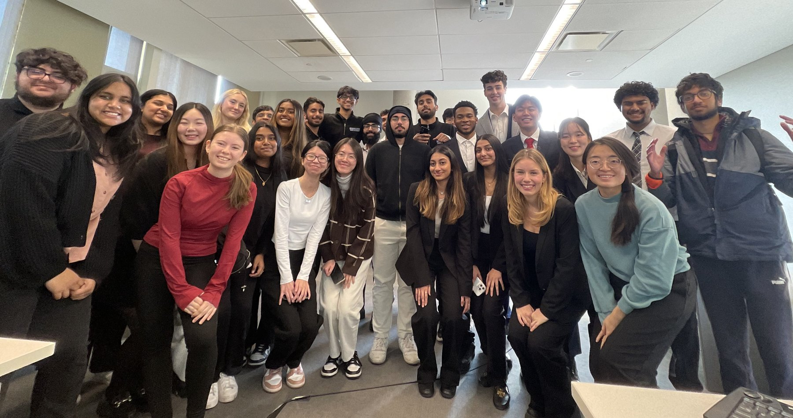
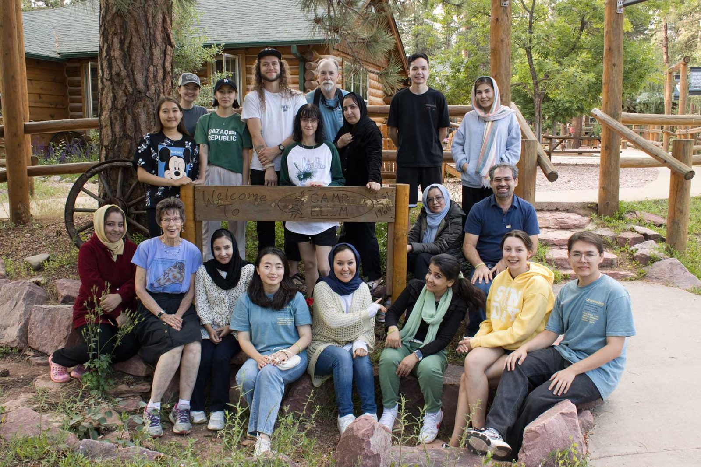
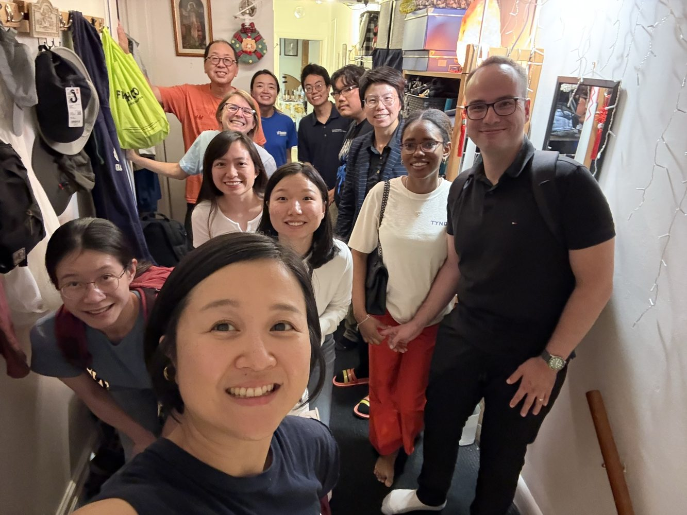
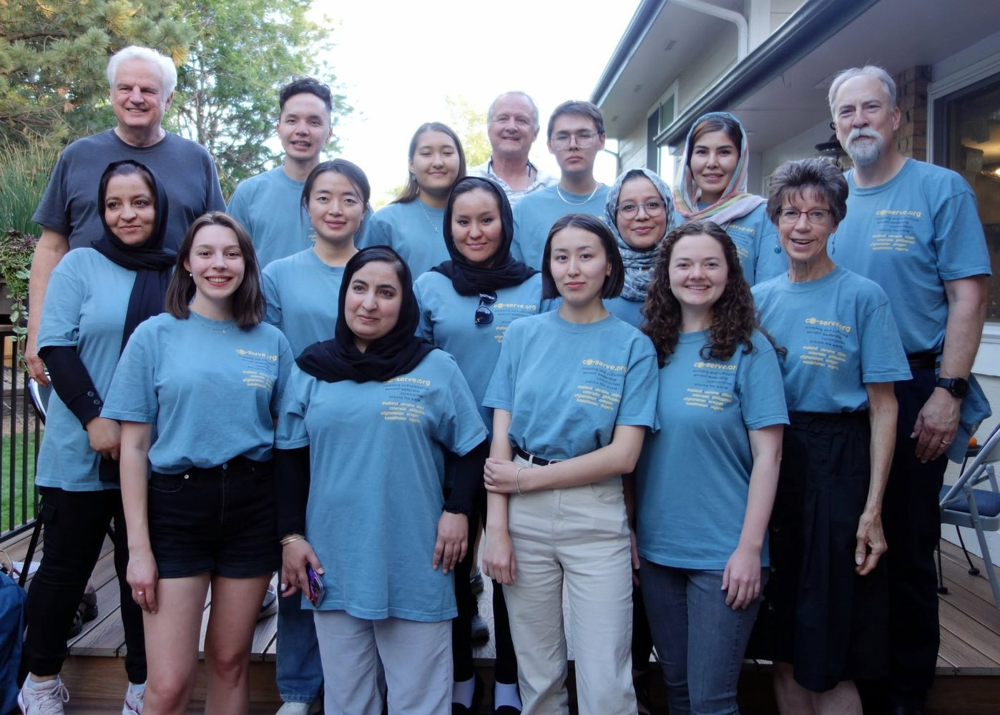
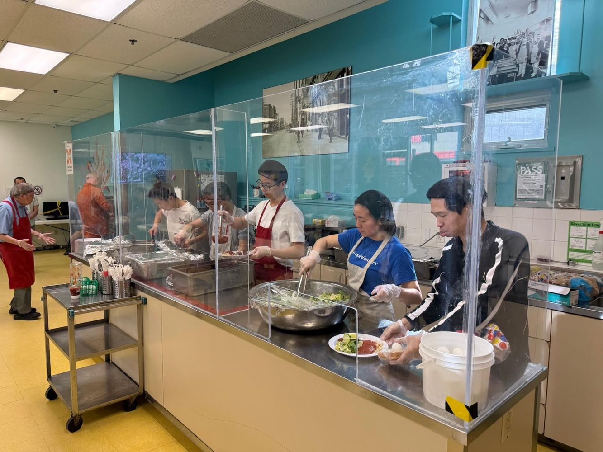
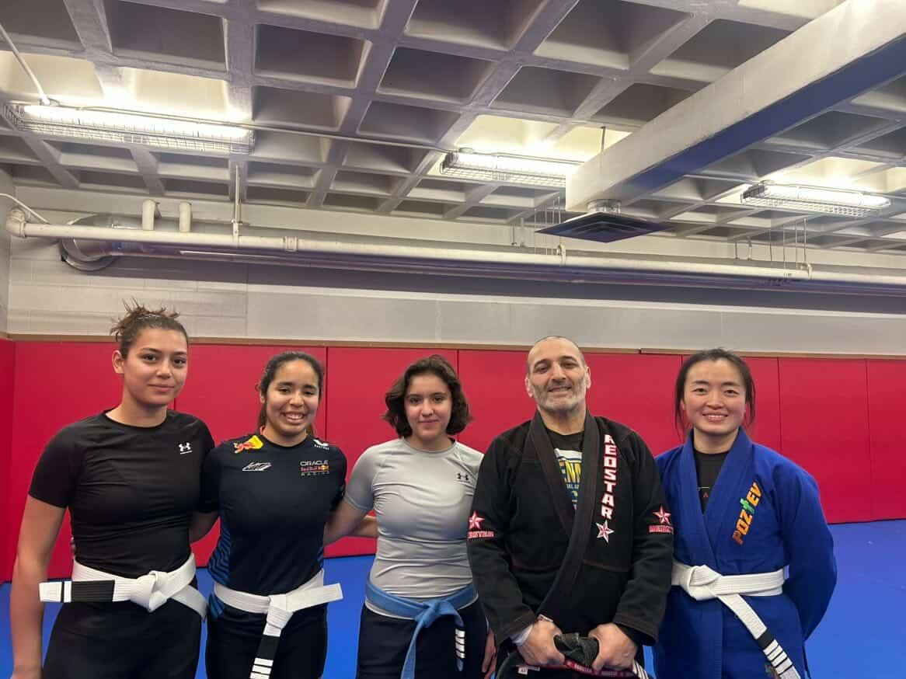
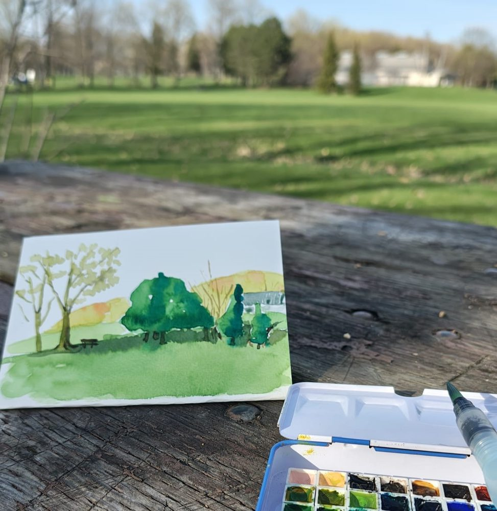

Ph.D. Candidate in Business Administration
Expected 2027Area of Study: Policy and Strategic Management
Schulich School of Business, York University
Supervisor: Dr. Preet S. Aulakh
Dissertation Committee: Dr. Maxim Voronov, Dr. Yuval Deutsch
I am a PhD candidate in Policy and Strategic Management at the Schulich School of Business, York University.
I study how organizations translate purpose into strategy and governance — especially in hybrid organizations that pursue social aims alongside commercial ones.
I grew up among the mountains and rivers of southwestern China, surrounded by farmers, small-business owners, educators, and families affected by poverty and limited opportunity. Seeing both the hardship and resilience of these communities inspired my passion for understanding how business can creating opportunities, strengthen communities, and restore hope.
Area of Study: Policy and Strategic Management
Schulich School of Business, York University
Supervisor: Dr. Preet S. Aulakh
Dissertation Committee: Dr. Maxim Voronov, Dr. Yuval Deutsch
Tianjin University
Supervisor: Dr. Wenxue Lv
Tianjin University
Research
Click a title to read more.
Yang, D. · Preparing for Journal of International Business Studies
Tests how governance forms shape purpose-driven strategy, contingent on institutions and founding history. Uses international microfinance panel data matched with founder information. Governance is treated not as a fixed efficiency device, but as a template whose social purpose is written by context and history.
Yang, D. · Preparing for Journal of Management
A conceptual typology of how organizations translate the same social purpose into different, yet viable, combinations of strategic role and governance authority.
Yang, D. · Preparing for Strategic Management Journal
Examines how hybrid organizations approach the same purpose through distinct combinations of governance and strategy across contexts, using fuzzy-set QCA on an international sample of microfinance organizations.
Yang, D., & Snyder, W. · Preparing for Academy of Management Annals
Maps the intellectual boundaries fragmenting corporate purpose research and integrates conversations across strategy, governance, and sustainability through bibliometric mapping, topic modelling, and systematic review.
Yang, D., Zhang, X., & Aulakh, P. S. · Under review, Journal of International Management
Explains how combinations of contractual, relational, and cultural conditions support effective international exclusive partnerships, using fuzzy-set QCA on cross-national partnership data.
Yang, D., Tian, H., & Lv, W. · Preparing for Journal of Supply Chain Management
Examines how social and safety responsibilities are allocated, negotiated, transferred, or left unclaimed across clients, contractors, subcontractors, professionals, and regulators, using triad interviews from Chinese construction projects.
Martin, B., Gladu, S., Sun, M., & Yang, D. · Preparing for Academy of Management Review
Compares how alternative legal forms encode mission protection and the distribution of financial returns, using comparative legal and institutional analysis.
How one question grew into the projects above.
Swipe sideways to explore the full path →
Solid arrows: how each project grew out of the one before it. Dashed lines: parallel streams that share a focus or a method.

I approach teaching as using business knowledge to help students grow into confident, independent thinkers and responsible leaders.
Through real-world cases, structured debates, and inclusive discussion, I encourage students to question assumptions, weigh competing perspectives, and exercise judgment rather than search for a single correct answer.
Personal mentorship and developmental feedback support this process, helping students see strategy as a way to shape organizations and create value for others.
Independent Instructor
Teaching Assistant
“The professor was highly knowledgable on strategy and was able to answer all of students' questions very well, providing her own insight. It is clear that the professor put in a lot of time and effort into preparing for lectures and cared a lot about students' success, by offering her own time to give feedback. As well, when given feedback on assignments, much detail was provided to ensure that her students were growing intellectually as much as they could! Overall, an amazing professor.”
— Student, INTL 3000
“She always encouraged participation and gave a chance to those who don't typically participate.”
— Student, INTL 3000
“Answered everybody's questions and gave everybody an opportunity to speak and participate in class.”
— Student, INTL 3000
I liked the fluidity and how everything is case based. She also offers lots of opportunities to prove your knowledge through bonus marks.
— Student, INTL 3000
I liked the aspect to the real world with real business cases from companies. Furthermore, it was very nice for the as an international student to also get to know American companies like Costco, which I never heard before.
— Student, INTL 3000
She knew our names and was there for answering our questions
— Student, INTL 3000

Service is not something separate from research and teaching, but as the practice that holds a community together.
My guiding value is servant leadership: using what I have — time, attention, and care — to help others grow, belong, and become servant leaders themselves.
That means listening before acting, noticing people whose needs may be less visible, and doing the quiet work of creating belonging — across campus ministry, mentoring, volunteering, and everyday life.

Joined 2023; Serving as Vice President for York and UofT campuses (2025–), welcoming international graduate students and building belonging through ministry and shared life.

Joined as student in 2021; Attended the Academy in 2023; Served as a mentor in 2025, accompanying international students as they grow into servant leaders.

Community meal service (2026.3-), helping prepare and serve food with care and presence.
Volunteer dog walking (2026.4-), giving shelter animals exercise, socialization, and attention outdoors.

(Soon-to-be Blue Belt, yeaaa!) Training that builds discipline, resilience, and mutual support on the mat.
I just love the sound of smashing the shuttlecock and connecting with others on the court.

Making and looking closely — a quieter way of noticing the world.